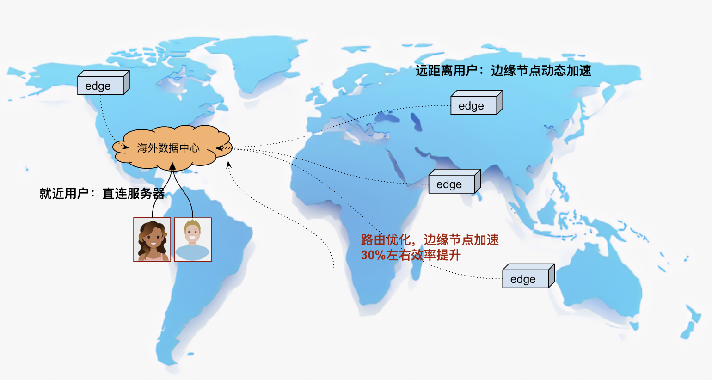

边缘节点动态加速
如果您的服务面向全球用户，为了提升用户访问质量，除了在当地建设数据中心外，还可以考虑低成本的技术方案：使用大量的边缘节点进行动静态加速。 基于边缘节点进行服务动态加速，对跨国、跨运营商此类较差的网络环境下有较好的表现。
图：边缘节点动态加速
边缘节点加速服务有比较成熟的服务商：如Akamai、Fastly、Cloudfront、Azure等等，这些服务商在全球各区域部署了近百万台边缘设备，像Tiktok、Shopify、Amazon等等众多全球化的服务都有成功的应用。
动态加速原理
区别CDN静态加速，动态加速主要是优化路由、链路技术对动态服务进行的请求优化服务。
路由优化 通过部署在边缘节点接入服务，针对到起点到源点之间Ping延时、丢包率等因素，计算出全部节点之间的最优、次优路径，预测除最优路由。 链路优化 根据前面TCP优化策略，会有连接、传输等相关的策略调整，在应用层，像TLS1.3、ECC证书、QUIC协议等等相关对服务有提升的技术都有应用。
动态加速效果
在我们的实际运营环境使用了Akamai对海外用户进行了加速服务，从抽样的数据看，整体连接速度提升了30%左右。
对比海外用户访问香港节点、接入GSA加速网络，测使用https协议(后端直接返回http status：200 http body："succ")， 得到如下加速数据
| 区域 | 直连 | Akamai加速 | 提升 |
|---|---|---|---|
| Bangkok | 0.58s | 0.44 | 31% |
| jakarta | 0.57s | 0.44 | 31% |
| Kuala Lumpur | 0.52s | 0.38 | 36% |
| Taibei | 0.51s | 0.40 | 37% |
| Hanoi Bac Mai | 0.54s | 0.41 | 30% |
| Singapore | 0.58s | 0.39 | 48% |
| Hong Kong | 0.38s | 0.24 | 58% |
| Tokyo | 0.60s | 0.45s | 32% |
| Surabaya | 0.67s | 0.52s | 29% |
| Manila | 0.46s | 0.34s | 36% |